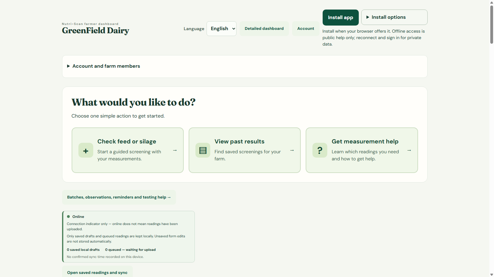
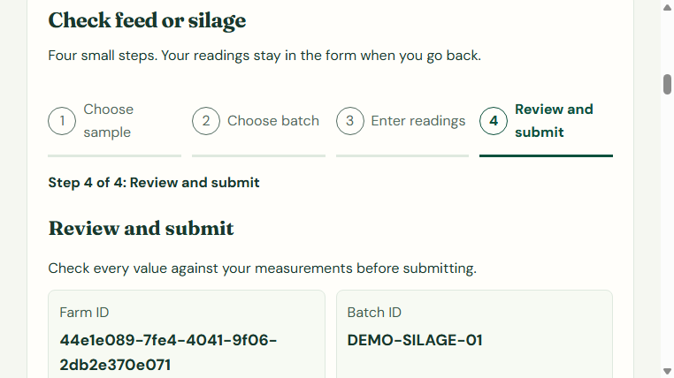
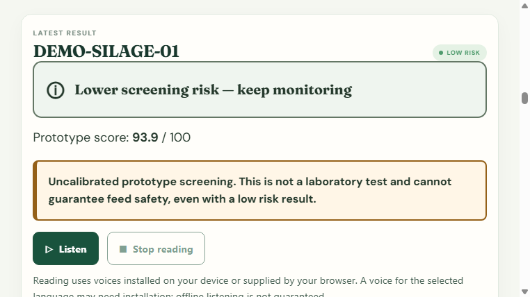
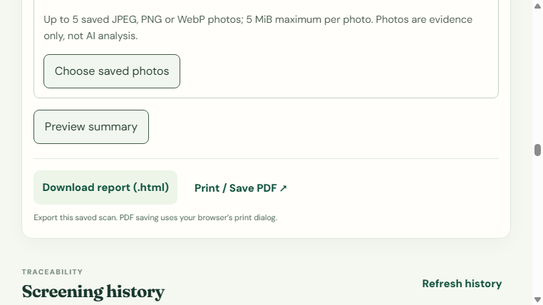

<!doctype html>
<html lang="en">
<head>
  <meta charset="utf-8">
  <meta name="viewport" content="width=1280, height=720, initial-scale=1">
  <title>NutriScan AI buildathon demo</title>
  <style>
    :root {
      --ink: #073c35;
      --ink-soft: #315c54;
      --cream: #f4f7ef;
      --paper: #fffdf8;
      --mint: #dff0cf;
      --lime: #bde88e;
      --gold: #d4a33b;
      --orange: #9b5c09;
    }
    * { box-sizing: border-box; }
    html, body { width: 1280px; height: 720px; margin: 0; overflow: hidden; }
    body { background: var(--cream); color: var(--ink); font-family: Arial, sans-serif; }
    .slide { width: 1280px; height: 720px; position: relative; overflow: hidden; padding: 72px 88px; }
    .slide::after { content: ''; position: absolute; width: 520px; height: 520px; right: -210px; top: -190px; border-radius: 50%; background: rgba(189,232,142,.34); }
    .brand { position: absolute; left: 88px; top: 36px; font-size: 16px; letter-spacing: .18em; text-transform: uppercase; font-weight: 700; z-index: 2; }
    .brand span { color: #75a94f; }
    h1, h2 { font-family: Georgia, serif; letter-spacing: -.035em; }
    h1 { font-size: 74px; line-height: .98; max-width: 900px; margin: 0 0 28px; }
    h2 { font-size: 48px; line-height: 1.02; margin: 0 0 18px; }
    p { font-size: 24px; line-height: 1.35; color: var(--ink-soft); max-width: 850px; }
    .kicker { color: var(--orange); font-weight: 700; text-transform: uppercase; letter-spacing: .16em; font-size: 15px; margin-bottom: 18px; }
    .pill { display: inline-flex; padding: 11px 17px; border-radius: 999px; background: var(--mint); font-weight: 700; margin-right: 8px; }
    .flow { display: flex; align-items: center; gap: 16px; margin-top: 52px; font-weight: 700; font-size: 22px; }
    .flow .step { background: var(--paper); border: 1px solid #c6d6c5; padding: 18px 22px; border-radius: 14px; box-shadow: 0 10px 25px rgba(7,60,53,.08); }
    .flow .arrow { color: #76a653; font-size: 30px; }
    .footer { position: absolute; left: 88px; right: 88px; bottom: 32px; display: flex; justify-content: space-between; color: #5c7a72; font-size: 14px; z-index: 2; }
    .footer strong { color: var(--ink); }
    .cards { display: grid; grid-template-columns: repeat(3, 1fr); gap: 22px; margin-top: 44px; position: relative; z-index: 2; }
    .card { background: var(--paper); padding: 28px; min-height: 230px; border: 1px solid #d6e0d1; border-radius: 20px; box-shadow: 0 14px 30px rgba(7,60,53,.08); }
    .card .icon { display: grid; place-items: center; width: 48px; height: 48px; border-radius: 14px; background: var(--mint); font-size: 26px; font-weight: 700; margin-bottom: 22px; }
    .card h3 { font-size: 24px; margin: 0 0 10px; }
    .card p { font-size: 17px; margin: 0; line-height: 1.45; }
    .split { display: grid; grid-template-columns: 42% 58%; gap: 32px; align-items: center; height: 100%; position: relative; z-index: 2; }
    .screen { background: #eef4ec; border: 9px solid #163f37; border-radius: 24px; padding: 10px; box-shadow: 0 20px 45px rgba(7,60,53,.24); transform: rotate(1deg); }
    .screen img { display: block; width: 100%; height: 490px; object-fit: cover; object-position: top center; border-radius: 13px; }
    .screen-wide { position: absolute; right: 40px; top: 110px; width: 720px; background: #eef4ec; border: 9px solid #163f37; border-radius: 24px; padding: 10px; box-shadow: 0 20px 45px rgba(7,60,53,.24); transform: rotate(1deg); z-index: 2; }
    .screen-wide img { display: block; width: 100%; height: 500px; object-fit: cover; object-position: top left; border-radius: 13px; }
    .callout { background: var(--ink); color: white; padding: 28px 32px; border-radius: 20px; margin-top: 32px; box-shadow: 0 15px 30px rgba(7,60,53,.18); }
    .callout strong { color: var(--lime); font-size: 28px; }
    .callout p { color: #d6e6d8; font-size: 18px; margin: 8px 0 0; }
    .result-copy { position: relative; z-index: 3; max-width: 470px; }
    .result-number { font-family: Georgia, serif; font-size: 72px; font-weight: 700; line-height: 1; }
    .result-number small { font-family: Arial, sans-serif; font-size: 24px; color: var(--ink-soft); }
    .metric-row { display: flex; gap: 12px; margin-top: 26px; }
    .metric { background: var(--paper); border: 1px solid #d6e0d1; border-radius: 14px; padding: 14px 16px; min-width: 130px; }
    .metric b { display: block; font-size: 22px; }
    .metric span { display: block; margin-top: 4px; font-size: 13px; color: var(--ink-soft); }
    .closing { display: grid; place-items: center; text-align: center; height: 100%; position: relative; z-index: 2; }
    .closing h2 { font-size: 76px; margin-bottom: 20px; }
    .closing p { margin: 0 auto; max-width: 720px; }
    .disclaimer { position: absolute; bottom: 54px; left: 180px; right: 180px; padding: 12px 18px; border: 1px solid #d1c08e; border-radius: 9px; color: #6f5316; background: #fff7df; font-size: 14px; z-index: 2; }
  </style>
</head>
<body>
  <main id="app"></main>
  <script>
    const slide = Number(new URLSearchParams(location.search).get('slide') || 1);
    const root = document.querySelector('#app');
    const brand = '<div class="brand">nutri<span>scan</span> <small>AI</small></div>';
    const footer = (label) => `<div class="footer"><strong>${label}</strong><span>Buildathon demo • prototype screening workflow</span></div>`;
    const slides = {
      1: `<section class="slide">${brand}<div style="position:relative;z-index:2;padding-top:70px"><div class="kicker">Field evidence, made actionable</div><h1>Feed decisions<br>should start with<br>evidence.</h1><p>NutriScan AI connects measurements, review, explainable scoring, and traceable history in one farmer-first workflow.</p><div class="flow"><div class="step">Sample</div><div class="arrow">→</div><div class="step">Scan</div><div class="arrow">→</div><div class="step">Analyze</div><div class="arrow">→</div><div class="step">Act</div></div></div>${footer('NutriScan AI')}</section>`,
      2: `<section class="slide">${brand}<div class="kicker">The field problem</div><h2>From scattered readings<br>to one trusted workflow.</h2><div class="cards"><article class="card"><div class="icon">1</div><h3>Capture</h3><p>Keep batch identity, units, and measured values together at the point of work.</p></article><article class="card"><div class="icon">2</div><h3>Explain</h3><p>Turn supplied readings into a transparent prototype score, risk signal, and next step.</p></article><article class="card"><div class="icon">3</div><h3>Trace</h3><p>Preserve farm-scoped history, reports, evidence, and follow-up decisions.</p></article></div>${footer('The product promise')}</section>`,
      3: `<section class="slide">${brand}<div class="split"><div><div class="kicker">Built for field operators</div><h2>One simple place to start.</h2><p>Create a farm, choose a sample, and move from a question to a guided screening in seconds.</p><div class="callout"><strong>Farmer-first by design</strong><p>Multilingual help, offline drafts, batch records, and clear review gates keep the workflow usable in the field.</p></div></div><div class="screen"></div></div>${footer('01 • Start with the farmer')}</section>`,
      4: `<section class="slide">${brand}<div class="kicker">Measured inputs, no invented values</div><h2>Review before you submit.</h2><p style="max-width:560px">The guided flow makes the sample identity and every supplied reading visible before the result is created.</p><div class="screen-wide"></div><div class="metric-row" style="position:absolute;left:88px;bottom:100px;z-index:3"><div class="metric"><b>10</b><span>required readings</span></div><div class="metric"><b>1</b><span>traceable sample</span></div><div class="metric"><b>0</b><span>guessed values</span></div></div>${footer('02 • Capture with discipline')}</section>`,
      5: `<section class="slide">${brand}<div class="result-copy"><div class="kicker">Explainable prototype result</div><h2>Useful guidance<br>with honest limits.</h2><div class="result-number">93.9 <small>/ 100</small></div><div class="pill">LOW RISK</div><p>The result gives an operator a clear next action while keeping the uncalibrated status impossible to miss.</p></div><div class="screen-wide" style="right:70px;top:145px;width:650px;transform:rotate(-1deg)"></div>${footer('03 • Explain, do not overclaim')}</section>`,
      6: `<section class="slide">${brand}<div class="kicker">Traceability that compounds</div><h2>Every screening becomes<br>a better field record.</h2><div class="cards" style="grid-template-columns:repeat(2,1fr);width:650px"><article class="card"><div class="icon">✓</div><h3>History and reports</h3><p>Search saved scans, compare batches, and download a reviewable HTML report.</p></article><article class="card"><div class="icon">↗</div><h3>Ready for the next layer</h3><p>Private evidence photos, optional ESP32 readings, multilingual help, and explicit offline drafts.</p></article></div><div class="screen" style="position:absolute;right:54px;top:136px;width:520px;transform:rotate(1deg)"></div>${footer('04 • From one scan to a system')}</section>`,
      7: `<section class="slide"><div class="closing">${brand}<div><div class="kicker">NutriScan AI</div><h2>Portable.<br>Explainable.<br>Traceable.</h2><p>Make field evidence more consistent and actionable—without pretending a prototype is a laboratory.</p></div></div><div class="disclaimer">Prototype screening only • Not a laboratory test • Expert validation and calibration required</div>${footer('Thank you')}</section>`
    };
    root.innerHTML = slides[slide] || slides[1];
  </script>
</body>
</html>
